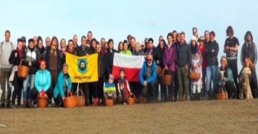
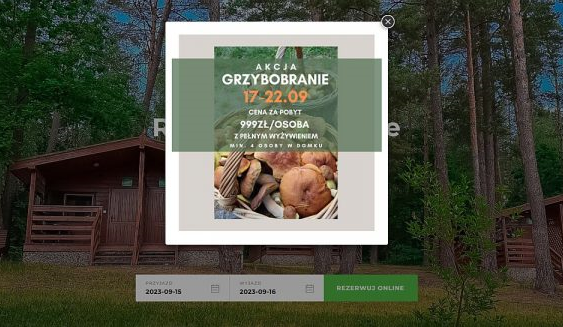
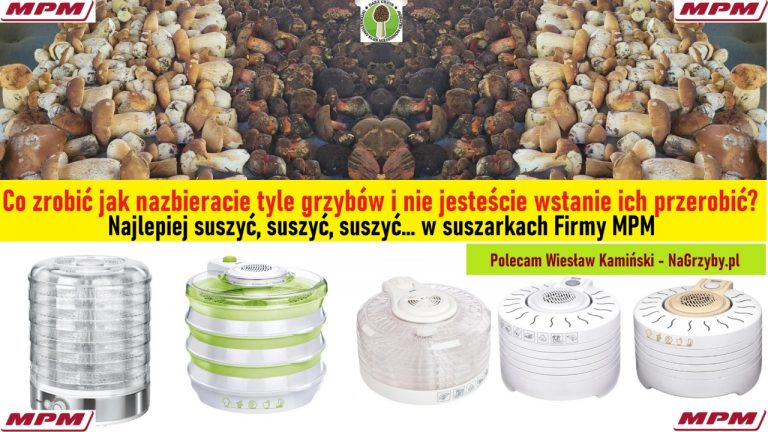

Blog

W tym roku Patriotyczne Grzybobranie na Pustyni Błędowskiej odbędzie się wyjątkowo już 21.10.2023
W tym roku Patriotyczne Grzybobranie na Pustyni Błędowskiej odbędzie się wyjątkowo już 21.10.2023. Spotykamy się o godz 9.00 przy Róży Wiatrów a po grzybobraniu o godz 14.00 ognisko z pieczeniem tego co kto ze sobą przyniesie… Tak wyglądało nasze ubiegłoroczne grzybobranie.
W tym roku Patriotyczne Grzybobranie na Pustyni Błędowskiej odbędzie się wyjątkowo już 21.10.2023
W tym roku Patriotyczne Grzybobranie na Pustyni Błędowskiej odbędzie się wyjątkowo już 21.10.2023. Spotykamy się o godz 9.00 przy Róży Wiatrów a po grzybobraniu o godz 14.00 ognisko z pieczeniem tego co kto ze sobą przyniesie… Tak wyglądało nasze ubiegłoroczne grzybobranie.
#grzybobranie #pustyniabledowska #spotkanie #zielonki

Jeszcze dwa grzybowe turnusy w Zawiatach
Za nami już dwa grzybowe turnusy w Zawiatach. Jeśli ktoś chciałby uczestniczyć w kolejnych które przed nami się będą odbywały to zapraszamy. Coraz więcej grzybów… sezon się rozkręca… Dowiedz się czy są jeszcze wolne miejsca w naszym wspaniałym turnusie.
Jeszcze dwa grzybowe turnusy w Zawiatach
Za nami już dwa grzybowe turnusy w Zawiatach. Jeśli ktoś chciałby uczestniczyć w kolejnych które przed nami się będą odbywały to zapraszamy. Coraz więcej grzybów… sezon się rozkręca… Dowiedz się czy są jeszcze wolne miejsca w naszym wspaniałym turnusie.
#grzybobranie 2023 #zawiaty
Ośrodek Wypoczynkowy Wodnik w Rucianym-Nida ma zaszczyt zaprosić na Wielkie Wrześniowe Grzybobranie
Jesteś smakoszem grzybów i jednocześnie pasjonatem ich zbierania? A może nie zbierasz ich, bo nie znasz i chciałbyś poznać pod okiem doświadczonego grzybiarza? Dobrze trafiłeś.
#grzybobranie #ośrodek #wodnik

Co zrobić jak nazbieracie zbyt dużo grzybów?
Tak dużo nazbieraliście grzybów bo w danym momencie trafiliście na wysyp czy jak kto woli „pojaw”? Nie macie już siły marynować, gotować kolejnej zupki czy robić następny sos… najprościej grzyby ususzyć a suszone wykorzystać kiedy przyjdzie Wam na to ochota…Ja osobiście od 15 lat używam suszarki MPM z których jestem.
Co zrobić jak nazbieracie zbyt dużo grzybów?
Tak dużo nazbieraliście grzybów bo w danym momencie trafiliście na wysyp czy jak kto woli „pojaw”? Nie macie już siły marynować, gotować kolejnej zupki czy robić następny sos… najprościej grzyby ususzyć a suszone wykorzystać kiedy przyjdzie Wam na to ochota…Ja osobiście od 15 lat używam suszarki MPM z których jestem.
#dobrasuszarka #grzybyicodalej #MPM
Mikołajkowe spotkania przy ognisku w Myślenicach 9 lub 10 grudnia 2023
Jak zwykle co roku spotykamy się w Myślenicach na Polanie Św. Mikołaja. Do wyboru kto chce albo 9 grudnia albo 10 grudnia (lub w oba te dni) o godzinie 9.00 – proszę o kontakt w jakim terminie przyjdziecie Jeśli ktoś przyjedzie z daleka będzie mógł przenocować w Myślenicach jeden lub dwa dni (8 lub 9 grudzień)Będziemy w nocować w jednym miejscu gdzie spotkamy się po ognisku 9 grudnia.
#mikolajki #ognisko #spotkanie

Pierwsze tegoroczne borowiki…
Pierwsze borowiki można spotykać już w maju… w tym roku trochę późno ale znajdowałem. To filmy nagrane z tych szczęśliwych chwil… 🙂 Pierwszy borowik
#grzybobranie #brzanki #sezon